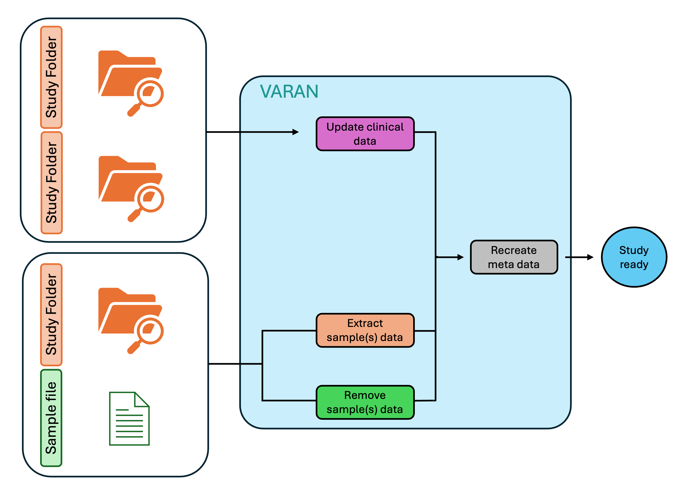

User guide
Input Preparation
Varan accepts two types of input:
- Folder Input: A folder containing all the necessary data files.
- File Input: A file that contains the paths to the data files.
Both formats are supported for processing, and you can choose the one that best suits your workflow.
Folder
User must organize an input folder containing all of the vcf and tsv files requested following the structure reported below:
input_folder/
├── CNV
│ ├── 001.vcf
│ ├── 002.vcf
│ └── 003.vcf
├── SNV
│ ├── 001.vcf
│ ├── 002.vcf
│ └── 003.vcf
├── CombinedOutput
│ ├── 111_CombinedVariantOutput.tsv
│ ├── 222_CombinedVariantOutput.tsv
│ └── 333_CombinedVariantOutput.tsv
├── FUSIONS
│ └── Fusions.tsv
├── sample.tsv
└── patient.tsv
Where:
- SNV folder contains all vcf files related to single nucleotide variants.
- CNV folder contains all vcf files related to copy number variants.
- CombinedVariantOutput folder contains all the Combined Variant Output file in tsv format (this kind of files contains info about TMB, MSI and Fusions).
- FUSIONS folder contains the template fusion.tsv, which can filled with fusion data if the Combined Variant Output files are unavailable.
- sample.tsv file is a template for clinical data of the samples.
- patient.tsv file is a template for clinical data of the patients.
File(s)
User must compile several input files (by filling in specific templates):
- sample.tsv file, a template to fill with samples' clinical info.
- fusions.tsv file, a template to fill with fusions' information.
- patient.tsv file, a template to fill with patients' clinical info.
⚠️ For this input, only the sample.tsv file is mandatory.
Templates
For both input by folder and by file, template filling by user is requested. Below will be briefly explained the structure of these templates:
sample.tsv
This template must be filled by user with all disposable samples' clinical info and will be used to create the data_clinical_sample.txt.
⚠️ This file is mandatory for Varan analysis!
| SAMPLE_ID | PATIENT_ID | MSI | TMB | MSI_THR | TMB_THR | ONCOTREE_CODE | snv_path | cnv_path | comb_path | ... |
|---|---|---|---|---|---|---|---|---|---|---|
| 0000001_DNA | 11111111 | 1 | 12 | BOWEL | path_to_snv | path_to_cnv | path_to_combined_output | ... |
The obligatory fields to keep are:
- SAMPLE_ID: IDs of all samples of interest.
- PATIENT_ID: IDs of all patients of interest.
- MSI: MSI value for each of the samples.
- TMB: TMB value for each of the samples.
- MSI_THR: MSI categorization based on the threshold set in the conf.ini file.
- TMB_THR: TMB categorization based on the threshold set in the conf.ini file.
- ONCOTREE_CODE: code to associate for the oncokb annotation.
⚠️ The user can add new columns starting from the last one.
patient.tsv
This template must be filled by user with all disposable patients' clinical info and will be used to create the data_clinical_patient.txt.
⚠️ This file is optional.
| PATIENT_ID | AGE | SEX | ... |
|---|---|---|---|
| 11111111 | 45 | F | ... |
The obligatory fields to keep are:
- PATIENT_ID: IDs of all patients of interest.
fusion.tsv
This template must be filled by user with all disposable fusion info and will be used to create the data_sv.txt.
⚠️ This file is optional.
| Sample_Id | SV_Status | Site1_Hugo_Symbol | Site2_Hugo_Symbol | ... |
|---|---|---|---|---|
| 0000001_DNA | SOMATIC | APC | BRCA1 | ... |
The obligatory fields to keep are:
- Sample_Id: IDs of all sample of interest
- SV_Status: fusion type
- Site1_Hugo_Symbol: first gene involved in fusion
- Site2_Hugo_Symbol: second gene involved in fusion
Configuration File
The first step to start using Varan is to correctly set the configuration file conf.ini.
⚠️ In the next subparagraph, for each field the type of variable requested will be inserted between angle brackets <>. For string, two possible entries can be found: < 'string' > and < string >. In the first case, it is requested to insert text inside quotation marks (*i.e. DESCRIPTION='this is the description'*), while on the other one, quotation marks are not requested (*i.e. PROJECT_NAME=study*).
⚠️ For Docker, a partially compiled configuration file (docker.ini) is available with vep and clinvar path already set.
Paths
In this section, it's possible to specify the paths for Vep (VEP_PATH) and its cache (VEP_DATA), fasta (REF_FASTA), vcf2maf (VCF2MAF), and ClinVar (CLINV). In CACHE, it is possible to set Ensembl version (i.e. 111)
[Paths]
VCF2MAF =
CLINV =
REF_FASTA =
VEP_PATH =
VEP_DATA =
CACHE =
⚠️ ClinVar database can be downloaded here
Multiple
In this section, it's possible to specify the paths in case of multiple SNV, CNV, and/or Combined Variant Output files analysis.
[Multiple]
SNV= < string >
CNV= < string >
COMBOUT= < string >
⚠️ This section has to be filled only in case of input by file.
Zip
In this section, you can decide how to manage MAF and SNV_FILTERED files.
[Zip]
ZIP_MAF = < boolean >
ZIP_SNV_FILTERED = < boolean >
COPY_MAF = < boolean >
OncoKB
In this section, it's possible to insert the personal oncoKB key. This key is mandatory to execute the oncoKB annotation.
[OncoKB]
ONCOKB= < string >
⚠️ The request for the oncoKB key can be done here
Project
In this section, it's possible to specify project info like study name, ID, description, and profile. These info will be inserted in meta files.
[Project]
PROJECT_ID = < string >
PROJECT_NAME = < string >
DESCRIPTION = < 'string' >
PROFILE_MUT = < 'string' >
PROFILE_CNA = < 'string' >
PROFILE_CNA_HG19 = < 'string' >
PROFILE_SV = < 'string' >
Filters
Here, it is possible to specify the filters' threshold to apply to SNV maf files.
[Filters]
CLIN_SIG = < ['string','string',...] >
CONSEQUENCES = < ['string','string',...] >
ONCOKB_FILTER = < ['string','string',...] >
t_VAF_min = < float >
t_VAF_min_novel = < float >
t_VAF_max = < float >
AF = < string >
POLYPHEN = < ['string','string',...] >
IMPACT = < ['string','string',...] >
SIFT = < ['string','string',...] >
drop_NA_AF = < boolean >
⚠️ For AF the field can be populated with </>/<=/>>=val (i.e., AF = <0.003>)
Cna
In this section, user can insert CNV genotypes of interest and ploidy.
[Cna]
HEADER_CNV = < ['string','string',...] >
PLOIDY = < int >
CNVkit = < boolean >
⚠️ Ploidy will be used to evaluate copy number discretization using cnvkit formula.
TMB
Here TMB thresholds can be specified.
[TMB]
THRESHOLD_TMB = < {'string':'string', 'string':'string', ...} >
i.e. THRESHOLD = {'Low':'<=5','Medium':'<10','High':'>=10'} where the string before : is the label assigned to TMB value, while the other is the specific threshold (i.e. for a sample with TMB=15, a label 'High' will be reported in the clinical sample data).
MSI
Here MSI thresholds for sites and values can be specified.
[MSI]
THRESHOLD_SITES = < string >
THRESHOLD_MSI = < string >
⚠️ THRESHOLD_SITES value will be used only if MSI information is extracted from Combined Variant Output files. If MSI is directly reported as a value inside the input tsv, only THRESHOLD_MSI will be applied.
⚠️ Both THRESHOLD_SITES and THRESHOLD_MSI can be populated with </>/<=/>=val (i.e., THRESHOLD = <20).
FUSION
Here Fusions thresholds can be specified.
[FUSION]
THRESHOLD_FUSION = < string >
⚠️ THRESHOLD can be populated with </>/<=/>=val (i.e., THRESHOLD = >=15).
ClinicalSample
Users can customize column names and data types for the data_clinical_sample.txt file.
[ClinicalSample]
HEADER_SAMPLE_SHORT = < ['string','string',...] >
HEADER_SAMPLE_LONG = < ['string','string',...] >
HEADER_SAMPLE_TYPE = < ['string','string',...] >
⚠️ HEADER_SAMPLE_TYPE accepts only STRING, NUMBER, BOOLEAN. If a different type is inserted, an error will be raised by Varan.
⚠️ If these fields are left empty, a default Header will be produced.
ClinicalPatient
Users can customize column names and data types for the data_clinical_patient.txt file.
[ClinicalPatient]
HEADER_PATIENT_SHORT = < ['string','string',...] >
HEADER_PATIENT_LONG = < ['string','string',...] >
HEADER_PATIENT_TYPE = < ['string','string',...] >
⚠️ HEADER_PATIENT_TYPE accepts only STRING, NUMBER, BOOLEAN. If a different type is inserted, an error will be raised by Varan.
⚠️ If these fields are left empty, a default Header will be produced.
Annotations
In this section, it's possible to insert manual notes that will appear in the report_VARAN.html file.
[Annotations] ANNOTATIONS = < ['string','string',...] >
2. Launch Varan
The possible option to launch varan main for block 1 are:
| Options | Description | Type | Required |
|---|---|---|---|
| -i --input | Add this option to insert the path of the input (folder or file(s)) |
string list | Yes |
| -o --output_folder | Add this option to insert the path where to save the output folder |
string | Yes |
| -c --cancer | Add this option to specify the cancer type |
string | Yes |
| -f --filter | Add this option to filter out variants from vcf/maf |
string | No |
| -k --onocoKB | Add this option to annotate with oncoKB |
boolean | No |
| -t --analysis_type | Add this option to specify the type of file (snv/cnv/fus/tab) to analyze. If not specified, all analysis will be done |
string | No |
| -w --overWrite | Add this option to overwrite an already existing output folder |
boolean | No |
| -R --resume | Add this option to resume an already started analysis. |
boolean | No |
| -m --multiple | Add this option to specify that the input is a multi-sample vcf file (a single VCF containing information from multiple patients) |
boolean | No |
To launch Varan docker version is mandatory to mount several volumes (-v) for granting a correct functioning.
docker run --rm -it -v :/input -v :/output -v :/vep_cache -v :/ref_fasta -v :/conf.ini varan Ex 1) Launch Varan base analysis with input folder:
Launch this command to process the contents of the input folder
docker run --rm -it -v :/input -v :/output -v :/vep_cache -v :/ref_fasta varan -v :/conf.ini varan -i -o /output/ -c Ex 2) Launch Varan base analysis with input file:
Launch one of these commands to process the contents of the input file(s):
- If you have sample.tsv and patient.tsv as input:
docker run --rm -it -v :/input -v :/output -v :/vep_cache -v :/ref_fasta -v :/conf.ini varan -i sample.tsv patient.tsv -o /output/ -c mixed docker run --rm -it -v :/input -v :/output -v :/vep_cache -v :/ref_fasta -v :/conf.ini varan -i sample.tsv "" fusion.tsv -o /output/ -c mixed docker run --rm -it -v :/input -v :/output -v :/vep_cache -v :/ref_fasta -v :/conf.ini varan -i sample.tsv patient.tsv fusion.tsv -o /output/ -c mixed Ex 3) Multiple vcf analysis:
Launch this command to specify that your input is a multi-vcf file or folder:
docker run --rm -it -v :/input -v :/output -v :/vep_cache -v :/ref_fasta -v :/conf.ini varan -i -o /output/ -c -m Ex 4) Overwrite analysis:
Launch this command to overwrite the output folder:
docker run --rm -it -v :/input -v :/output -v :/vep_cache -v :/ref_fasta -v :/conf.ini varan -i -o /output/ -c -w Ex 5) Resume analysis:
Launch this command to resume an already started analysis:
docker run --rm -it -v :/input -v :/output -v :/vep_cache -v :/ref_fasta -v :/conf.ini varan -i -o /output/ -c -R Ex 6) Specify analysis:
Launch one of these commands to specify the analysis' type:
- snv -> only snv analysis.
docker run --rm -it -v :/input -v :/output -v :/vep_cache -v :/ref_fasta -v :/conf.ini varan -i -o /output/ -c -t snv docker run --rm -it -v :/input -v :/output -v :/vep_cache -v :/ref_fasta -v :/conf.ini varan -i -o /output/ -c -t cnv docker run --rm -it -v :/input -v :/output -v :/vep_cache -v :/ref_fasta -v :/conf.ini varan -i -o /output/ -c -t fus docker run --rm -it -v :/input -v :/output -v :/vep_cache -v :/ref_fasta -v :/conf.ini varan -i -o /output/ -c -t tab Ex 7) OncoKB annotation:
Launch this command to use OncoKB annotation:
docker run --rm -it -v :/input -v :/output -v :/vep_cache -v :/ref_fasta -v :/conf.ini varan -i -o /output/ -c -k Add this option to insert the path of the input (folder or file(s)
Add this option to insert the path where to save the output folder| string | Yes |-c --cancer|
Add this option to specify the cancer type| string | Yes |-f --filter|
Add this option to filter out variants from vcf/maf | string | No |-k --onocoKB|
Add this option to annotate with oncoKB | boolean | No |-t --analysis_type|
Add this option to specify the type of file (snv/cnv/fus/tab) to analyze. If not specified, all analysis will be done |string|No |-w --overWrite|
Add this option to overwrite an already exisitng output folder|boolean| No |-R --resume|
Add this option to resume an already started analysis.
⚠️This option must be used with caution, because it assumes that the previous VCF to MAF conversion step was successful.| boolean | No
|-m --multiple|
Add this option to specify that the input is a multi-sample vcf file (a single VCF containing information from multiple patients) | boolean | No

The input for this block is a study folder correctly populated. It can be the output of the first block or an existing study folder downloaded from cBioPortal.
Based on the requested type of action (Update, Extract, Remove), the other input can be another study folder or a sample list tsv file.
#### 2. Launch Varan main
The possible option to launch Varan main for block 2 are:
| Options | Input | Type | Required
|----------------|----------------| :---:| :---:|
|-u Add this option if you want to update an existing study folder or merge two studies.| boolean | One between -u, -e or -r is required
|-e Add this option if you want to extract samples from an existing study folder.| boolean | One between -u, -e or -r is required
|-r Add this option if you want to remove samples from an existing study folder.| boolean | One between -u, -e or -r is required
|-p Add this option to specify the path of the existing study folder to update, or from which to remove/extract samples.| string | Yes
|-n Add this option to specify the path of the study folder containing updated/new information.| string | Only if the -u option is selected
|-s Add this option to insert the path of the .txt file containing the list of samples to remove/extract from the study folder.| string | Only if the -e or -r option is selected
|-N Add this option if you want to customize the study name (studyID).| string | No
|-o Add this option to specify the path where to save the output folder. If not provided, it will be created a new version of the existing study.| string | Only if the -N option is selected
Launch this command to update a study folder
```
docker run --rm -it -v Launch this command to extract a list of samples from a study folder and create a new study containing only these samples in the output path.
```
docker run --rm -it -v Launch this command to remove a list of samples from a study folder and save a new study without them in the output path, assigning a customized the study name.
```
docker run --rm -it -v Launch this command to update a study folder and create a new version of the original study folder.
```
python varan.py -u -p Launch this command to extract a list of samples from a study folder and create a new study containing only these samples in the output path.
```
python varan.py -e -p Launch this command to remove a list of samples from a study folder and save a new study without them in the output path, assigning a customized the study name.
```
python varan.py -r -p After varan.py has run successfully, the resulted output folder will have the following organization and content:
```
study_name
├── case_lists
│ ├── cases_cna.txt
│ ├── cases_sequenced.txt
│ └── cases_sv.txt
├── data_clinical_patient.txt
├── data_clinical_sample.txt
├── data_cna_hg19.seg
├── data_cna_hg19.seg.fc.txt
├── data_cna.txt
├── data_mutations_extended.txt
├── data_sv.txt
├── img
├── MAF_Filtered or MAF_Onco_filtered(*)
├── MAF_OncoKB (**)
├── maf or maf.zip (***)
├── meta_clinical_patient.txt
├── meta_clinical_sample.txt
├── meta_cna_hg19_seg.txt
├── meta_cna.txt
├── meta_mutations_extended.txt
├── meta_study.txt
└── meta_sv.txt
```
(\*) Filtered MAF will be stored respectively inside MAF_Onco_filtered or MAF_Filtered if MAFs were annotated with oncokb or not.
Examples
Docker version
To launch Varan docker version is mandatory to mount sevaral volumes (-v) for granting a correct functioning.
```
docker run --rm -it -v d -> filter out from snv mutations with ALT="." and FILTER ≠"PASS".
* p -> filter out from MAF mutations with FILTER ≠"PASS".
* v-> filter out from MAF mutations with vaf (t_VF column) values not in the ranges [t_VAF_min; t_VAF_max] specified in conf.ini.
* n -> apply a specific VAF filter to novel mutations (dbSNP_RS = "novel") filtering out from MAF novel mutations with vaf not in the range specified in conf.ini t_VAF_min_novel.
* a -> filter out from MAF mutations with AF values not in the range specified in conf.ini. You can choose to drop or keep mutations with no value for this column via 'drop_NA_AF' setting.
* o-> filter out from MAF mutations with ONCOGENIC values different to the ones specified in conf.ini ONCOKB_FILTER field. This requires the OncoKB annotation (-k option).
* c -> filter out from MAF mutations with CLIN_SIG values equals to the ones specified in conf.ini CLIN_SIG field.
* q -> filter out from MAF mutations with Consequences values different to the ones specified in conf.ini CONSEQUENCES field.
* y-> filter out from MAF mutations with PolyPhen annotation different to the ones specified in conf.ini POLYPHEN field.
* i-> filter out from MAF mutations with IMPACT annotation equals to to the ones specified in conf.ini IMPACT field.
* s-> filter out from MAF mutations with SIFT annotation equals to to the ones specified in conf.ini SIFT field.
A few examples of usage are here provided:
```
docker run --rm -it -v
Local version
Ex 1) Launch Varan base analysis with input folder:
Launch this command to process the contents of the input folder
```
python varan.py -i d -> filter out from snv mutations with ALT="." and FILTER ≠"PASS"
* p -> filter out from MAF mutations with FILTER ≠"PASS".
* v-> filter out from MAF mutations with vaf (t_VF column) values not in the ranges [t_VAF_min; t_VAF_max] specified in conf.ini.
* n -> apply a specific VAF filter to novel mutations (dbSNP_RS = "novel") filtering out from MAF novel mutations with vaf not in the range specified in conf.ini t_VAF_min_novel.
* a -> filter out from MAF mutations with AF values not in the range specified in conf.ini. You can choose to drop or keep mutations with no value for this column via 'drop_NA_AF' setting.
* o-> filter out from MAF mutations with ONCOGENIC values different to the ones specified in conf.ini ONCOKB_FILTER field. This requires the OncoKB annotation (-k option).
* c -> filter out from MAF mutations with CLIN_SIG values equals to the ones specified in conf.ini CLIN_SIG field.
* q -> filter out from MAF mutations with Consequences values different to the ones specified in conf.ini CONSEQUENCES field.
* y-> filter out from MAF mutations with PolyPhen annotation different to the ones specified in conf.ini POLYPHEN field.
* i-> filter out from MAF mutations with IMPACT annotation equals to to the ones specified in conf.ini IMPACT field.
* s-> filter out from MAF mutations with SIFT annotation equals to to the ones specified in conf.ini SIFT field.
A few examples of usage are here provided:
```
python varan.py -i
### Block Two: STUDY MANIPULATION
--Update|
--Extract|
--Remove|
--Path|
--NewPath|
--SampleList|
--Name|
--output_folder|
Examples
Docker version
To launch Varan docker version is mandatory to mount at least the input and the output folder for granting a correct functioning.
```
docker run --rm -it -v Local version
Ex 1) Update a study folder:
(\**) MAF_OncoKB folder will be create only if -k option is set and will contain all the MAF with oncoKB annotations.
(\***) A folder containing maf files. It will zipped if ZIP_MAF is set as True in conf.ini.
Per il blocco 2:
#### 3. Output
After varan.py has run successfully, the resulting output_folder will have the organization reported in [block 1](#3-output).